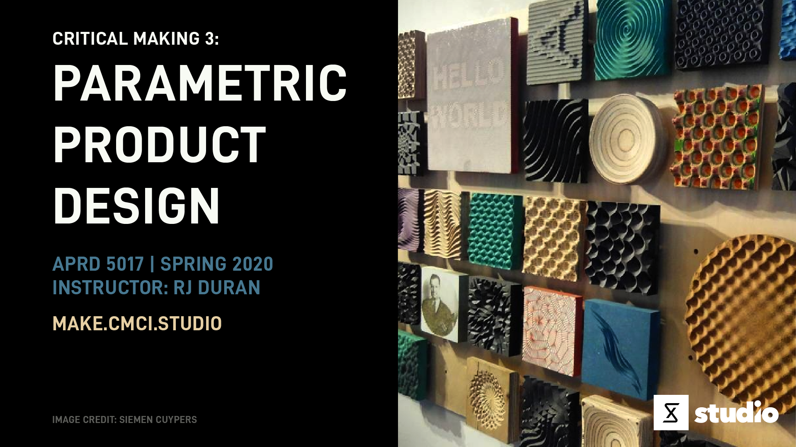

Critical Making 3: Parametric Product Design

Explores algorithmic modeling strategies for product development. It is a studio-based course that explores the product development process through algorithmic modeling strategies, computational design, and additive manufacturing. In this course students will learn from the ground up how to utilize McNeel Rhinoceros with Grasshopper--a visual programming environment for algorithmic modeling, to design parametric systems and how to translate digital objects into physical form through 3D printing. Students will be introduced to the emerging field of parametric product design by developing projects that explore a multitude of form-finding strategies in surface patterning and complex geometric modeling of everyday objects spanning a variety of scales and applications. Familiar examples of product categories ripe for design experimentation include common objects such as pens and speakers, household items such as furniture and lighting, and personal items such as clothing, razors, and jewelry. In addition, students will develop an understanding of how to evaluate and optimize their designs based on product constraints, use cases, materiality, form, and function of physical objects produced through iterative cycles of production.
Information
Day and Time:
Monday, 9:30 am - 12:30 pm
CMCI Studio (1301 Walnut St)
Instructor:
RJ Duran
Email: rj.duran@colorado.edu
Slack: @rjduran on cmcistudio.slack.com
Office hours by appointment. Feel free to reach out to me via slack or email.
Slack:
Channel #cmstudio and user group @ppd will be used for all course communication and notifications. Be sure to use the appropriate user group when necessary.
Course Themes
- Rhino & Grasshopper
- Computational Design
- Digital Fabrication
- Laser Cutting
- 3D Printing
- CNC Milling
- Algorithmic Modeling
- Mass Customization
- Pattern Formation
- Mathematics & Geometry
- Scripting / Programming in C#, Python
- Rapid Prototyping
- Product Design
Resources
This website is the primary resource for all Critical Making Studio courses. Some of the resources used across the different courses are divided up into sections found on the left sidebar. Course specific resources will be found within this course schedule page, also found near the top of the left sidebar.
CMCI Studio
CMCI Studio facilities include the large main room (West Studio) and adjacent smaller room (North Studio). Both rooms contain different functionalities for developing projects at varying scales and for varying audiences. Read through the Studio Handbook for learning about each room and accessing the various tools and capabilities we have on site.
Idea Forge
The Idea Forge is an on-campus design and fabrication facility open to all students located in the Fleming Building (near the Wolf Law Building at Broadway & Baseline Rd). In this course we will be making use of the tools and resources available to build projects and develop skills. Learn more at https://www.colorado.edu/ideaforge/.
PPD Learning Resources
This course will make use of various kinds of media such as books, websites, technical documentation, and video tutorials. While some resources will be listed under the week we encounter them, most of the primary learning resources can be found listed in the Learning Resources section of the PPD Setup Guide.
Course Repo
You will be able to find the Rhino and Grasshopper examples we talk about in class here.
Course Repo: CM3-PPD
Workload
- This is a 3 credit hour course. You should expect to dedicate at least 2-3 hours per credit hour. This translates into a 6-9 hours per week. Consider 6 hours a minimum expectation for one studio course and plan accordingly with your other studio courses.
- Deliverables for the course consist of "Looking Outwards" Reports, Workouts, Projects, and a Final Project. These are to be submitted weekly as blog posts on the due date specified each week. In general, assignment parameters will be based on the topics of the week and due the following week by the start of class time. Refer to the Deliverables section for more detail.
- The course is organized into weekly meetings consisting of instructor led project-driven topics organized as workshops and studio work sessions. It is expected that all students are active participants in each session.
- This course will require considerable effort outside of class time. Plan work sessions with others as much as possible and be sure to take care of your mind and body so as not to get too stressed or overexert yourself. If you should need assistance managing stress or otherwise, you can get in touch with CAPS.
Deliverables
This is an experimental project based course, largely driven by student research and interests. Each week will follow a similar format when it comes to finding balance between theory and practice. It's expected that each student has varying skills and interests upon entering the course and are excited to expand on them and apply them towards their areas of interest.
The course deliverables consist of "Looking Outwards" Reports to discover the emerging boundaries of parametric product design and report on them, Workouts to develop skills in 2D/3D design with Rhino and Grasshopper, digital fabrication, and product design, Projects to put research findings into practice and exercise creative faculties, and a Final Project to develop a product design system and family of physical products.
Each deliverable is expected to vary based on the area of interest and parameters defined. The following outlines the general criteria for course deliverables throughout the semester.
Looking Outwards
What is a "Looking Outwards" Report?
It's basically a blog post containing your research, thoughts, and ideas on a particular topic of interest. This means you should be looking at a variety of information sources such as blogs, emerging tech news, research papers, design/art/tech focused websites, tutorials, etc. covering the topics listed under Course Themes and reporting on what you find each week. These kinds of reports are due almost every week as noted in the schedule and count towards 10% of your final grade.
This approach is inspired by Prof. Golan Levin's Looking Outwards Reports for the course Interactivity & Computation at CMU School of Art.
Why are we doing these?
There are a few reasons:
- Reason 1: I literally can’t keep up with the changes taking place in the various fields related to parametric design and I need your help. Many hands make light work. You are the pioneers of this class and are tasked with discovering content and creating documentation that adds to the field of Parametric Product Design.
- Reason 2: We need to build a body of documentation that connect several disparate fields. Conducting research across several fields will uncover new and interesting opportunities for us.
Throughout the semester I will document our collective findings under Looking Outwards (found in the left sidebar under CM 3 PPD).
Workouts
What is a "Workout"?
A workout is some kind of weekly exercise that aims to practice and build skills.
What form do these take?
They can take the form of reading technical documentation, writing code, solving a design challenge, trying out new software, and working through video tutorials that challenge and enable practice of concepts discussed in class. These are not graded but are highly recommended because they will provide greater understanding of a specific topic through focused hands-on practice. You may write blog posts for the workouts you do to help document your progress and process but it's not required.
Projects
What is a Project?
A project aims to solve a problem or accomplish a goal using tools and skills.
What form do these take?
They are largely based on the topics explored in class, through the workouts, and through your research. They allow you to dig into and expand on a topic that interests you within the field of Parametric Product Design. They can be thought of as mini-projects to build towards developing your final project or one-off experiments exploring a particular technique or software workflow you are interested in. Projects are due every few weeks as noted on the schedule and count towards 40% of your final grade.
Final Project
Read more about writing a project proposal and final project deliverables here.
Grading & Evaluation
Grades for the course follow the standard A through F letter grading system and will be determined by the following breakdown.
| Type | Percentage of Grade |
|---|---|
| Looking Outwards | 10 % |
| Workouts | Not graded |
| Projects | 40 % |
| Final Project | 50 % |
Work is evaluated based on the following:
- Done vs Not Done. Done gets credit, Not Done does not get credit.
- Quality and Quantity of deliverables. This studio based course requires a healthy level of creative immersion and balance to be successful. Explore your creative process through making and always deliver to the best of your abilities. Achieve quality through quantity.
- Engagement with the subject matter. If something isn't interesting to you, make it interesting.
- Clarity of documentation. Make it easy for others to read and understand.
- Collaboration will also be a factor of evaluation if you choose to work on projects in teams of no more than 3-4 people. The division of duties on any project needs to be clearly defined and documented by all team members and will factor into individual evaluations.
Week 1: Overview
Jan 17 (Friday)
- Overview of Course
- Course Deliverables
- PPD Setup Guide
- Parametric Design (Fall 2019)
???+ note "Looking Outwards [0]: The Parametric Design Landscape"
Begin to investigate the field of parametric design and what designers working parametrically are doing. Much of the work out there falls into the domain of architecture because they are the primary users of parametric design software. But, what if we begin to focus in on products that modern digital fabrication techniques such as laser cutting, 3d printing, and cnc milling can produce? What new forms are possible with both access to powerful design software in combination with the ability to physically make?
1. Identify 2-3 areas ripe for parametric design experimentation.
* What kinds of products can you imagine benefiting from parametric design?
2. Identify 2-3 creatives (designers, architects, etc) that are making interesting forms, objects, installations, or artifacts.
* What are they making?
* Try to identify specifically what is interesting to you about their work and workflow. What's inspiring about the work?
* What kinds of tools are they using?
Instagram Hashtags to Follow
* [#grasshopper3d](https://www.instagram.com/explore/tags/grasshopper3d/)
* [#computationaldesign](https://www.instagram.com/explore/tags/computationaldesign/)
* [#parametricdesign](https://www.instagram.com/explore/tags/parametricdesign/)
Share a link to your post with user group **@ppd** in Slack channel **#cmstudio**.
**_Due: Jan 27_**
???+ example "Workout [0]: Getting Started"
1. This week you need to download and install the required software listed in the [PPD Setup Guide](/guides/ppd-setup-guide/). You can use Rhino for 90 days with no restrictions. I suggest purchasing a license after the trial period from the CU Bookstore for $90.
2. Start reading through some of the listed resources for learning Rhino and Grasshopper. There are many great tutorials and channels on YouTube that cover different aspects of the environment and ways of working. I think you will quickly find that the quality and content varies quite a bit so it's good to have some foundational skills under your belt before jumping into lots of video tutorials. If you are brand new to Rhino you will want to go through some basic Rhino tutorials to get familiar with the environment.
Getting Started with Rhino & Grasshopper
* [Learning Rhino for Mac](https://www.linkedin.com/learning/learning-rhino-5-for-mac/)
* [The Grasshopper Primer](http://grasshopperprimer.com/en/index.html)
* [Grasshopper Getting Started by David Rutten](https://vimeopro.com/rhino/grasshopper-getting-started-by-david-rutten)
* [A beginner’s guide to visual scripting with Grasshopper by Paul Jeffries](https://blog.ramboll.com/rcd/tutorials/a-beginners-guide-to-visual-scripting-with-grasshopper.html)
Week 2: No Class
Jan 20
MLK Day, No Class
Week 3: Gh Basics / Patterns
Jan 27
- Looking Outwards [0] - What did you research?
- Workout [0] - What did you make?
- Course Repo: CM3-PPD - You will be able to find the Rhino and Grasshopper examples we talk about in class here.
Grasshopper Basics
- User Interface
- Grasshopper Definitions
- Points, Planes & Vectors
- Object Types
- Math
- Lists
- Display, Custom Preview of Geometry
- Data Trees
- Tutorials: Data Trees Masterclass with David Rutten - 6 part series
- Workflow
- Everything you need to know about Display and View Menus in Grasshopper
- Grasshopper "Good Practice" by TUDelft
- Bifocals - Great plugin that displays the name of a component.
- Documentation
- Documenting a Definition with Screenshots
- Rhino Screenshots - ScreenCaptureToFile
- Extending Grasshopper
- Special Folders for Components and User Objects
- To install components: Drop .gha files (or folders) into File > Special Folders > Components Folder
- To install user objects: Drop .ghuser files (or folders) into File > Special Folders > User Objects Folder
- Relaunch Rhino and Grasshopper to load the installed components or user objects.
- GrasshopperDeveloperSettings - A command to specify custom folders for components.
- Special Folders for Components and User Objects
- Making Patterns (cm-design)
- 2D Grids
- Deformations
- Image Sampler
- Graph Mapper
- Attractors
Tools / Plugins
- Paneling Tools - Included in Rhino 6. Requires additional step to install for Grasshopper. Follow instructions.
- Weaverbird
- Parakeet - This will work on macOS but gives warning when loading Grasshopper. Ignore the warning.
- Tools for working with meshes
Additional Learning Resources
These blogs are great archives of various facets of parametric design in education and practice. Think of them as inspiration and maps leading to further research topics.
- Legacy Grasshopper Forum
- Current Grasshopper Forum
- designcoding.net
- WeWantToLearn.net
- Co-de-iT
- Generative Design Computing
- Digital Fabrication for Designers
- Fabricademy Wiki
- Dataisnature
- Parametric House: Research Archive
- Zha Code Edu
- Designmorphine
- CuminCAD - A database of research from various Architecture and Design organizations and conferences.
???+ note "Looking Outwards [1]: Patterns in Product Design"
How can patterns be applied to product design?
Identify some examples of products that make use of 2D and/or 3D patterns. Analyze the patterns used in attempt to deconstruct them and identify key characteristics. Sometimes you can start a design exploration from a pattern of interest.
Is the pattern 2D, 3D, or a combination? Is it made of [tesselations](https://en.wikipedia.org/wiki/Tessellation) or [tilings](https://en.wikipedia.org/wiki/Euclidean_tilings_by_convex_regular_polygons)? Is there a kind of [symmetry](http://math.cmu.edu/~bkell/21110-2010s/symmetry-tilings.html)? Are the patterns more organic and natural in appearance? How are the patterns produced - by hand, machine, process or combination?
Other References & Examples
* [Tessellation](http://mathworld.wolfram.com/Tessellation.html)
* [Fractals, Chaos, and Self-Similarity by Paul Bourke](http://paulbourke.net/fractals/)
* [Tilings and Patterns by Branko Grunbaum & G.C. Shephard](https://www.amazon.com/Tilings-Patterns-Second-Dover-Mathematics/dp/0486469816) - Foundational book on the topic of patterns.
* [Visualizing Mathematics with 3D Printing by Henry Segerman](http://www.3dprintmath.com/) - Many examples of using 3D printing to "see" and understand mathematical concepts physically.
* [WOVNS](https://www.wovns.com/) - Patterns applied to textiles. Mass customization at scale.
* [Structurica GH Script Library](https://structurica.com/) / [Instagram](https://www.instagram.com/structurica/) - A new parametric design definition library
Share a link to your post with user group **@ppd** in Slack channel **#cmstudio**.
**_Due: Feb 3_**
???+ example "Workout [1]: Exploring Patterns"
Draw inspiration from products and/or patterns you find interesting and create a [Grasshopper definition](http://grasshopperprimer.com/en/1-foundations/1-2/0_anatomy-of-a-grasshopper-definition.html) that contains your design explorations. Below are some tools you can start looking into that may help you make patterns. If you are stuck, look into the references above and below for some guidance. The best way to get better at building parametric definitions is by making small design studies and iterating with a set of components.
1. [2D Patterns in Grasshopper](http://mkmra2.blogspot.com/2016/10/2d-patterns-in-grasshopper.html) - A great starting point for learning how to make 2D patterns with the built in components. No plugins needed for these examples.
* This set of examples includes use of the Attractors, the Image Sampler component, the Graph Mapper component, and the Custom Display component to generate geometry and style with color.
2. [Paneling Tools in Rhino]([Paneling Tools](https://www.food4rhino.com/app/panelingtools-rhino-and-grasshopper))
* Tutorial: [Rhino Paneling Tools by Parametric House](https://www.youtube.com/watch?v=jEsn12tqtkY)
* Course: [Level 1 Paneling Tools Course](https://vimeo.com/showcase/3163942) - 7 part series
* Course: [Paneling Tools Webinar Course](https://vimeopro.com/rhino/panelingtools-webinar-course) - 13 part series
3. [Paneling Tools in Grasshopper]([Paneling Tools](https://www.food4rhino.com/app/panelingtools-rhino-and-grasshopper))
* Tutorial: [Paneling Tools Grasshopper by Parametric House](https://www.youtube.com/watch?v=DLn2lRk-e7U)
4. [Cocoon](http://www.bespokegeometry.com/2015/07/22/cocoon/) + [Weaverbird](http://www.giuliopiacentino.com/weaverbird/)
* Tutorial: [Weaverbird Tutorial by Parametric House](https://www.youtube.com/watch?v=oA-dCF2FLEI)
5. [Parakeet](https://www.food4rhino.com/app/parakeet)
* Tutorial: [Parakeet Basics](https://www.youtube.com/watch?v=paQ2nC57new)
Week 4: Pattern Algorithms
Feb 3
- Looking Outwards [1]: Patterns in Product Design - What did you research?
- Workout [1]: Exploring Patterns - What did you make?
- Discussion / studio session
???+ note "Looking Outwards [2]: Patterns with Purpose"
Expand this week on how patterns are used in products you admire. Look closer at the pattern systems used in these products and try to extract the layers of logic they contain. Why is the patterning used? Is it form, function, both? What is it's purpose?
Build off your research from last week or identify a few new items to deconstruct for this week. The references below are for inspiration and encouragement of the work that goes into designing really anything. They are good reminders that design, parametric or not, it takes lots of experimentation, focus, and trial and error to develop your style and skills. This is why making lots of things on the regular is so important. Your idea typically doesn't come together on the first try. Make.
* [Eames: The Architect & The Painter](https://www.youtube.com/watch?v=2H5BNk2Cyt8) - Must watch documentary about the powerful design duo, Charles and Ray Eames.
* [Rams (Documentary)](https://www.hustwit.com/rams) - Rams is a documentary portrait of Dieter Rams, one of the most influential designers alive, and a rumination on consumerism, sustainability, and the future of design.
Share a link to your post with user group **@ppd** in Slack channel **#cmstudio**.
**_Due: Feb 10_**
???+ example "Workout [2]: Exploring Patterns Cont."
This week you can go any number of directions.
* Make a definition that explores a patterning technique with purpose.
* Identify some existing products that have patterns and attempt to deconstruct and recreate the logic.
* Continue exploring the resources from last week to improve your skills with Grasshopper to making patterns.
References
* [LaN: 3D Tiles](https://www.pinterest.com/livearchitect/3d-tiles/), [LaN: Folded](https://www.pinterest.com/livearchitect/folded/), [LaN: CNC Mill Interiors](https://www.pinterest.com/livearchitect/cnc-mill-interiors/), [LaN: Triangulation](https://www.pinterest.com/livearchitect/triangulation/), [LaN: 3D Space Shape](https://www.pinterest.com/livearchitect/3d-space-shape/) - A set of design inspiration boards
* [Generative Algorithms using Grasshopper by Zubin Khabazi (2012)](https://issuu.com/pabloherrera/docs/generative_algorithms_f07be9052a219d) - Thanks Clayton!
* [http://handlebar3d.com/grasshopper](Handlebar 3D Basic Grasshopper Tutorials) by Raymundo Burgueno - A few tutorials and examples of patterns used in automotive design. You can find even more workflows in his [YouTube Channel](https://www.youtube.com/channel/UCcpImaI2uFJ7e_-6KBnVT_g/videos).
* [Generative Landscapes](https://blog.claytonk.com/2020/02/11/moire-musings/) - This site has several 2d and 3d pattern algorithms to build from. Thanks Clayton!
Week 5: Digifab Workflows: Laser Cutting / Vinyl Cutting
Feb 10
- Looking Outwards [2]: Patterns with Purpose - What did you research?
- Workout [2]: Exploring Patterns Cont. - What did you make?
- Minor change. "Assignments" are now referred to as "Projects".
- Grasshopper Review
2D Workflows
- Laser Cuting
- Laser Cut Panel Tutorial - Example of how to take a design from Rhino/Gh into Illustrator for laser cutting.
- Vinyl Cutting
Project 1: Parametric System 1
Objectives
- Design a parametric system for generating 2D/3D patterns suitable for laser cutting or vinyl cutting.
- Fabricate instances your design using a laser cutter and/or vinyl cutter.
Project Parameters
Per class discussion, you have the option to produce a paneling system of some kind based on the following parameters.
- Size: 4x4 in to 12x12 in
- Material: Cardboard, Wood, Acrylic, Mat Board, Paper, Card Stock, Vinyl (No Laser. Vinly Cutter Only)
- Ideas: Light Screens, Panel System, Tiles, Window Coverings, Shutters, Artwork
Places to get Materials
- Acrylic: Plasticare (Denver), CO Plastics (Louisville), Home Depot
- Cardboard: Home Depot, Office Max, Denver Boxes, Recycle Bin / Dumpster
- Paper: HR Meininger Art Supply (Denver), Art Supply Stores, Hobby Lobby
- Vinyl: Amazon - This or something of a different size depending on how much cutting and transfering you are doing.
Deliverables
- A Grasshopper definition for your parametric system.
- Documentation of the process from design to fabrication.
- Physical models / prototypes
- Be prepared to share your project in class next week.
Due: Feb 17
Week 6: Digifab Workflows: Intro to CNC Milling
Feb 17
Discussion
- Project 1 Share
Into to Bantam Mill
- Overview
- Working with SVG Files
- Saving SVG from AI
- File > Save As, svg
- SVG Profiles: SVG 1.1
- Type: Convert to outline
- SVG Files
- Use SVG Files to Effortlessly Mill Without Learning CAD and CAM
- Machining SVGs Using the Bantam Tools Software
- Save in SVG Format - Adobe information about export options.
- Saving SVG from AI
- Getting Started
- Download BantamTools - This is the control software you use to run toolpaths.
- Operating the Mill
- Basic Safety
- 3D Workflows
- Speeds and Feeds
- Projects
- Cleanup
- Use the black/red shop vacuum and small nozzles to remove all debris after use.
- Remove tools used and place into storage tube.
- Put all tools / supplies back into the black cabinet when done.
???+ example "Workout [3]: Review Bantam Tools Documentation"
This week I would like you to read through all the Getting Started resources above for the mill.
Practice bringing SVG files into BantamTools to visualize what they will look like when cut from a piece of stock material.
Week 7: Digifab Workflows: More CNC Milling
Feb 24
Workshop
We will continue where we left off last week and run some more small projects.
Projects
- Light-Up PCB Badge
- CMCI Studio Dog Tag
- CMCI Studio PCB Card
- Pattern Engrave in Acrylic
- Need to look at acrylic speeds and feeds and setup custom tool.
- Ref: Plastics - Speeds & Feeds Chart
???+ note "Looking Outwards [3]: CNC Milled Products"
Identify a 2-3 examples of products that make use of CNC milling in the process of creating the product. Look closely at the product and the specific production processes involved. Discuss the following in your post.
* How is CNC milling used?
* Would the product design be possible without CNC milling?
* What makes the product unique?
* What materials are used in the product?
* If you were to replicate the design, what do you think the workflow looks like from design to prototype?
* Is the product parametric in any way? If not, could it be and how?
References
* [The Edge Podcast](https://www.bantamtools.com/blogs/theedge)
* [Neal Feay](https://www.nealfeay.com/)
* [Siemen Cuypers](http://www.siemencuypers.com/)
* [Open Desk](https://www.opendesk.cc/)
* [Dom Riccobene](https://www.instagram.com/dom.riccobene/)
* [LaN: CNC Mill Interiors](https://www.pinterest.com/livearchitect/cnc-mill-interiors/)
Share a link to your post with user group **@ppd** in Slack channel **#cmstudio**.
**_Due: Mar 2_**
???+ example "Workout [4]: Mill It!"
This week I would like you to work in groups of 2 or 3 to practice engraving / cutting on a piece of PCB or acrylic using the Bantam Mill. There are a few other materials in our current stock so feel free to explore those options in the weeks ahead. Refer to the [Materials](https://www.bantamtools.com/all-materials) section of the Bantam Tools website for more info.
* Before running any files, be sure to read through the [Basic Safety](https://support.bantamtools.com/hc/en-us/articles/115000723693-Basic-Safety-Overview) page. It's very important to be focused and attentive at all times when working with the mill.
* Read through the [Engraving Dog Tags](https://support.bantamtools.com/hc/en-us/articles/360038821814-Engraving-Dog-Tags) and [Light-Up PCB Badge](https://support.bantamtools.com/hc/en-us/articles/360037787874-Light-Up-PCB-Badge) tutorials. Make sure you understand the workflow shown in each tutorial before running the machine.
* Run one or both of the [CMCI Studio Dog Tag](https://github.com/rjduran/CM3-PPD/tree/master/week_07/CMCI_Studio_Dog_Tag) or [CMCI Studio PCB Card](https://github.com/rjduran/CM3-PPD/tree/master/week_07/CMCI_Studio_PCB_Card) example files.
* Create your own pattern curves or artwork from Grasshopper, Rhino, and/or AI to engrave and or cut. Begin to document your workflow for this process.
Week 8: Digifab Workflows: 3D Printing
Mar 2
Discussion
- Looking Outwards [3]: CNC Milled Products - What did you find?
- Workout [4]: Mill It! - What did you make?
- When to mill it?
- When to 3d print it?
3D Printing
- Design for 3D Printing - A new guide I put together that contains resources for design, printing, materials, troubleshooting, and post-processing or 3D printed parts.
- Ultimaker (FDM)
- Formlabs (SLA)
- Shapeways
???+ note "Looking Outwards [4]: 3D Printed Products"
Identify a 2-3 examples of products that make use of 3D printing in the process of creating the product. Look closely at the product and the specific production processes involved. Discuss the following in your post.
* How is 3D printing used?
* Would the product design be possible without 3D printing?
* What makes the product unique?
* What materials are used in the product?
* If you were to replicate the design, what do you think the workflow looks like from design to prototype?
* Is the product parametric in any way? If not, could it be and how?
References
* [Fitchwork](https://www.instagram.com/fitchwork/)
* [Nervous System](https://n-e-r-v-o-u-s.com/)
* [Shapeways Creator Tools](https://www.shapeways.com/creator)
* [Formlabs Blog](https://formlabs.com/blog/) - They feature lots of interesting projects and case studies.
Share a link to your post with user group **@ppd** in Slack channel **#cmstudio**.
**_Due: Mar 9_**
???+ example "Workout [5]: Print It!"
This week I would like you to 3D print one or more instances of a parametric pattern using the Form 2 3D Printer at the Idea Forge. This could be an extension to your pattern definition developed for Project 1 or another system you may be experimenting with.
We will talk about the printing process in class and what you need to consider to print at IF. There will be a small material cost associated with printing at IF. They charge **$0.30/ mL** and require an STL file or Preform ready file.
References
* [Key design considerations for 3D Printing](https://www.3dhubs.com/knowledge-base/key-design-considerations-3d-printing/)
* [How to design parts for SLA 3D Printing](https://www.3dhubs.com/knowledge-base/how-design-parts-sla-3d-printing/)
Week 9: Parametric Surfaces
Mar 9
Discussion
- Looking Outwards [4]: 3D Printed Products - What did you find?
- Workout [5]: Print It! - What did you make?
- IF Printing Status
Grasshopper Session
- Workshop on patterned surfaces that could be CNC milled or 3d printed.
Project 2: Parametric System 2
Objectives
- Design a parametric system for generating 2D/3D patterns suitable for cnc milling or 3d printing.
- Fabricate instances your design using a a 3d printing process or cnc milling process.
Deliverables
- A Grasshopper definition for your parametric system.
- Documentation of the process from design to fabrication.
- Physical models / prototypes
- Be prepared to share your project in class next week.
Due: Mar 16
Week 10: Going Virtual
Mar 16
We will use the following Zoom meeting to have class each week. You can learn more about Zoom from OIT at https://oit.colorado.edu/services/conferencing-services/web-conferencing-zoom.
Zoom Meeting: https://cuboulder.zoom.us/j/6140595823
Discussion
- Virtual class for rest of semester. What does this look like?
- Project 2 Share
- Final Project Concepts
- Representation - VR/AR, Rendering, Visualization
Final Project Proposal
- Final Project Proposal
- Meet with each project group via Zoom Meeting to discuss proposals.
- Sign up for a meeting time here
Due: Mar 30
Spring Break
Mar 23
Spring Break, No Class
Week 11: Review Final Project Proposals
Mar 30
- Meet with each project group via Zoom Meeting to discuss proposals.
- Sign up for a meeting time here
Week 12: Final Projects
Apr 6
- Meet via Zoom Meeting for virtual studio
Week 13: Final Projects
Apr 13
- Meet via Zoom Meeting for virtual studio
Week 14: Final Projects
Apr 20
- FCQ's
- Meet via Zoom Meeting for virtual studio
Week 15: Final Projects
Apr 27
- Prepare for "Virtual" Spring Show
- Apr 30th - Last day of Spring classes.
- May 4th - Final Project Documentation Due
Final Project Documentation
- Old Meets New: Applications of Creative Technology by Yvonne Danyluck
- Easy Breezy(ish) by Vanessa Frye
- Fountain of Hygene: Redesigning the Hand Sanitizing Experience by Mark Grundberg
- Parametric Design + Projection Mapping by Clayton Kenny
- Vertical Hex Storage by Dave Laskowski
- House Able by Aitana Rothfeld
- Audio Visualization by Josh Sheetz